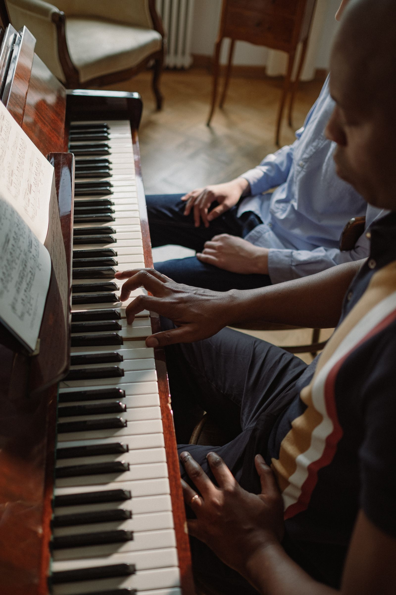
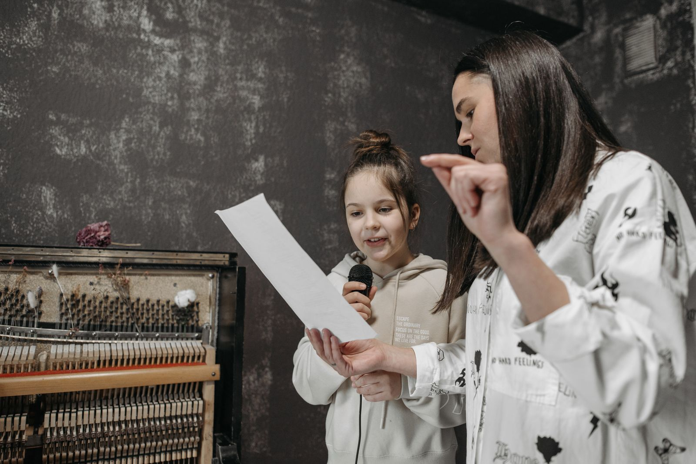

音の違いや呼吸を感じる。
よく聴くことから、
自分の表現を見つけます。
小さな「できた」が、自分の音になる。
聴いて、まねして、奏でてみる。
奏ノ庭は、ひとりひとりの
「弾いてみたい」から始まる場所。
教室名・レッスン内容・写真はすべてサンプルです。
TOPICS
音を合わせると、世界がひろがる。ひとりの練習を、
聴き合うことで、見えてくる。ひとりの練習を、
みんなの音へ。
個人レッスンで見つけた音を、
仲間とのアンサンブルで育てる
学び方のご紹介。
仲間とつくる、はじめての一曲。＃個人からアンサンブルへ＃音でつながる↗
FIRST STEP
音楽への入り口
今の気持ちに合う始め方を。
始め方のサンプル 01
レッスン案内のサンプル→はじめて奏でる ↗
✓ 楽器に触れるところから始めたい
✓ 基礎を自分のペースで学びたい
好きな曲を深める ↗
✓ 弾いてみたい一曲がある
✓ 表現や音色をもっと磨きたい
仲間と音をつくる ↗
✓ 誰かと演奏を楽しみたい
✓ ステージや発表に挑戦したい
FOR YOUR FAMILY
続ける時間を、そばで支える。
うまくいく日も、迷う日も。
年齢や経験、暮らしのペースに合わせて、
音楽を楽しみ続けるための
サポートを大切にする教室の提案です。
OUR LESSON
音を育てる、
３つの時間。
数字は教室の実績ではなく、
このサンプルの案内項目です。
LESSONS
あなたの「好きな音」は、
どこにある？
年齢や経験に合わせて選ぶ、
架空のレッスンをご紹介します。
一音ずつ、ていねいに

ピアノと鍵盤
姿勢、指づかい、譜読みから。
好きな曲へ少しずつ進む。
弦楽器
構え方から音色づくりまで。
響きを聴きながら学ぶ。
声と仲間で、音をひろげる

ボーカルと表現
呼吸と発声から、自分らしい声へ。
歌う楽しさを育てる。
アンサンブル
聴き合い、リズムを合わせる。
仲間と一曲をつくる。
OPEN STUDIO
ようこそ、はじめての音へ。見て、聴いて、
見て、聴いて、
奏でてみよう。
HELLO!
MY SOUND.
MY SOUND.
教室の空気にふれてみる。
好きな曲や楽器の話をしてみる。
あなたの新しい音を、ここから。
開催日程・申し込み機能はサンプル表示です。
DESIGN SAMPLE
ここから始まる、
音楽の一歩。
架空の企業情報を使用したデザインサンプルです。教室名・レッスン内容・講師・所在地・写真は実在の教室を紹介するものではありません。
所在地：サンプル表示（架空）
連絡先：XXX-XXXX-XXXX
体験予約・資料請求は受け付けていません。